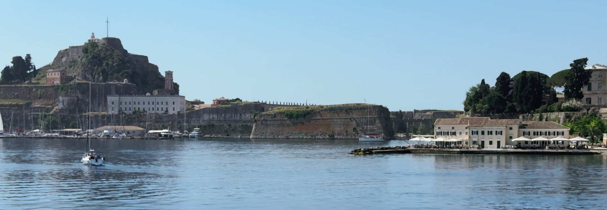
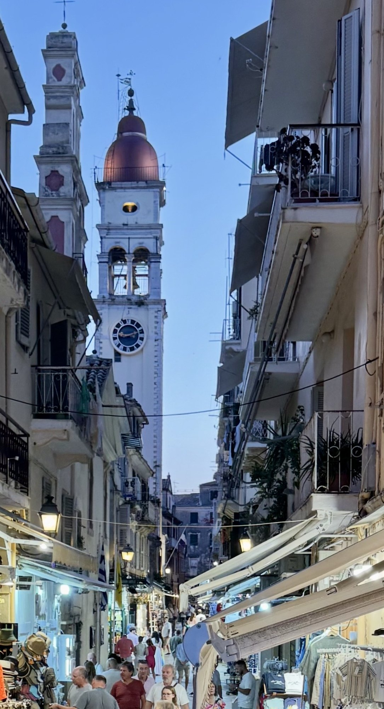
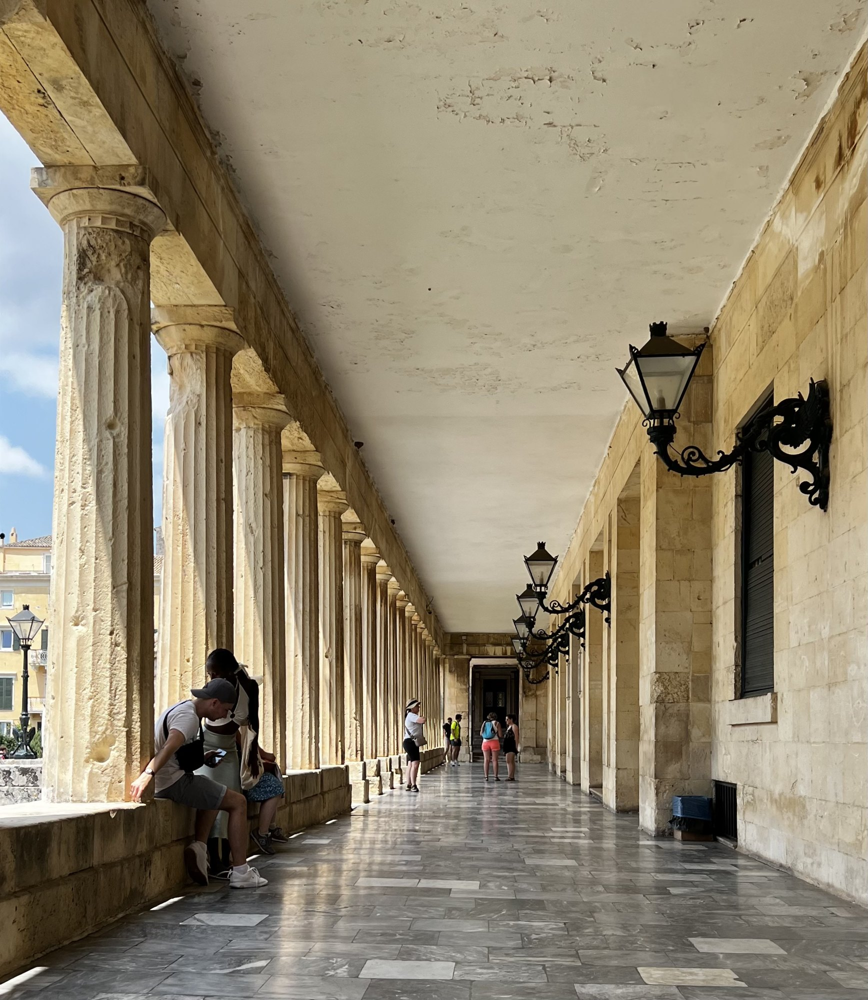

FIRST IMPRESSIONS – A LITTLE BIT OF VENICE, A LITTLE BIT OF PARIS AND A LOT OF GREECE
Corfu Town was our first stop on the island, and what a welcome it turned out to be. Just ten minutes from the airport, we were soon negotiating the narrow streets, trying to work out where on earth our apartment was hiding. Corfu Old Town is one of those places that immediately draws you in. Elegant Venetian architecture, grand squares, colourful balconies, little winding alleyways and cafés spilling out onto pavements. It's a place where you can happily lose yourself for hours, although perhaps not quite so happily if you're the person trying to find your way back to the hotel!
Recognised as a UNESCO World Heritage Site in 2007, Corfu Old Town has a fascinating history and a character unlike many other Greek island towns. With Venetian, French and British influences all mixed together, it feels more like a little corner of Italy or France that has somehow landed in the Ionian Sea. And we hadn't even found the shops yet!
WHAT CORFU OLD TOWN LOOKS AND FEELS LIKE
The historic centre is a wonderful jumble of narrow cobbled streets, known locally as kantounia, which weave between tall, elegant buildings. Look upwards and you'll find ornate balconies, brightly coloured shutters, washing lines stretched between buildings and flower-filled balconies adding splashes of colour.
The architecture is predominantly Venetian, although the French and British have left their mark too. It's this mixture that makes Corfu so distinctive. You can wander from a grand European-style square into an impossibly narrow alleyway, past a traditional Greek taverna and suddenly emerge in front of a magnificent palace.
At the heart of the town is Spianada Square, one of the largest squares in the Balkans. It's a huge open space providing a welcome contrast to the tightly packed streets surrounding it. There are lawns, pathways, trees and plenty of room for people to gather. It's also home to one of Corfu's more unexpected traditions – cricket. A rather British reminder of the island's colonial past, with locals and visitors occasionally enjoying a game on the very green lawns.
The whole town has an elegant, slightly old-fashioned charm, but it's far from being a museum piece. It's a living, breathing place where everyday Greek life carries on alongside the history.
OUR DISCOVERIES – SHOPPING, COFFEE AND A VERY SMALL LIFT!
Corfu Old Town is an absolute paradise for anyone who enjoys a bit of retail therapy. And by anyone, I mean Jacquie. The streets are packed with independent boutiques, jewellery shops, leather goods, artisan stores and little shops selling local products and souvenirs.
You can spend hours wandering around, discovering something interesting at every turn. Traditional crafts, olive wood products, local delicacies and plenty of things you never knew you needed until you spotted them in a shop window.
Meanwhile, I had to develop a rather sophisticated system of keeping track of which street we'd entered and where we were supposed to be meeting again. Losing your wife in Corfu's narrow lanes is surprisingly easy. Finding her again, particularly if she's found a really good boutique, is another matter entirely.
One of the town's most famous spots is The Liston, a beautiful colonnaded promenade running along the western edge of Spianada Square. Built during the French period and inspired by Paris's Rue de Rivoli, its elegant arches are lined with cafés and restaurants, with outdoor tables overlooking the square.
This is the place to sit, order a coffee or something stronger and watch Greek life unfold. The cafés are busy, the people-watching is excellent and there's a wonderful atmosphere, particularly as the afternoon drifts into evening.
For a ringside view, we found ourselves at Liston Gastrotheque Café. Sitting beneath the ornate lanterns, surrounded by the beautiful arches and trees of the Liston, it was a lovely spot to watch the world go by. Although, a word of warning: keep an eye on your food and drink. The pigeons seem to think the café terraces are an all-inclusive buffet, and they're not particularly shy about helping themselves!
Another lovely discovery was the waterfront at Faliraki, just a short walk from the main square. Here you'll find Faliraki Café Ouzeri, a waterfront spot overlooking the Ionian Sea and the imposing Old Fortress. We escaped the heat, found ourselves a table in the shade and ordered a sangria and a beer. Sometimes sightseeing requires a little sacrifice.
It's also a good place to try traditional Corfu dishes such as pastitsada, sofrito and fresh seafood, rather than surviving entirely on coffee and shopping.
BEST THINGS TO SEE AND DO IN CORFU OLD TOWN
There's plenty to explore beyond the shops and cafés, and although you can cover the main sights on foot, it's worth allowing yourself time to wander.
The Old Fortress

One of Corfu's most impressive landmarks, the Old Fortress sits on a rocky headland overlooking the town and the Ionian Sea. Originally developed by the Byzantines and strengthened by the Venetians, it played an important role in defending the island against Ottoman attacks.
Cross the bridge over the sea moat and explore the impressive fortifications, old buildings and pathways. If you have the energy, climb towards the highest point for spectacular panoramic views across the rooftops, harbour and coastline. It's one of the best viewpoints in Corfu Town.
The Church of Saint Spyridon

You won't have to look very hard to find the distinctive red-domed bell tower of Saint Spyridon Church. Dedicated to Corfu's patron saint, the church is one of the most important religious landmarks on the island. Inside are the remains of Saint Spyridon, and the church is an important place of pilgrimage for Orthodox Christians.
Even if churches aren't usually top of your sightseeing list, this one is worth visiting for its history and beautiful interior.
The Palace of St Michael and St George

At the northern end of Spianada Square stands this impressive neoclassical palace, built during British rule in the early nineteenth century. It once served as the residence of the British Lord High Commissioner and later became a royal residence.
Today it houses the Museum of Asian Art, with collections of Chinese, Japanese and other Asian artworks. The building itself is worth admiring, even if you don't venture inside.
Campiello – The Oldest Quarter
If you want to experience the real character of Corfu, head into Campiello, the oldest part of the Old Town. This is where the streets become particularly narrow, the buildings seem to lean towards one another and the balconies are almost close enough to shake hands across the alleyways.
Look out for the Venetian Well, little hidden squares and traditional houses. It's a photographer's dream and a lovely place to explore without a particular destination in mind.
The New Fortress
If you've still got some sightseeing energy left, head towards the New Fortress on the north-western side of town. Despite its name, it dates back to the sixteenth century and was built by the Venetians to strengthen the town's defences. Its elevated position offers another interesting perspective over the Old Town and old harbour.
DAY TRIPS BY FERRY – BEYOND CORFU
If you fancy escaping the town for a day, Corfu is also a brilliant starting point for exploring some of the beautiful destinations along the Ionian coastline. There are various boat trips and ferry excursions available, giving you the opportunity to discover places that deserve a holiday of their own.
You can take trips across to the picturesque mainland harbour towns of Parga and Sivota, both known for their beautiful waterfronts, turquoise waters and relaxed Greek atmosphere.
Alternatively, head out to the gorgeous Paxos and Antipaxos islands. Paxos is a little Greek island paradise, with pretty harbours, traditional villages and lovely swimming spots. Just offshore, tiny Antipaxos is famous for its spectacular turquoise water and Caribbean-style beaches. If you've ever seen photographs of Voutoumi Beach, you'll understand why people make the journey.
These trips offer a completely different perspective of the Ionian, and they're a great way to squeeze a little more exploring into your stay without having to organise another hotel or hire car.
We intend to cover Parga, Sivota, Paxos and Antipaxos in separate destination blogs, so if you're planning a longer trip around this part of Greece, keep an eye out for those. There's plenty more to discover beyond Corfu's Old Town.
And finally, don't forget to simply wander. Some of the best discoveries in Corfu are made when you put the map away and see where the next little alleyway takes you.
PRACTICAL INFORMATION – GETTING AROUND AND WHERE TO STAY
Getting there: Corfu International Airport is approximately 10 minutes by taxi from the Old Town. Our taxi cost around €25, although fares can vary, so agree the price before setting off.
Where we stayed: We booked an apartment called Luxury Penthouse, right in the town centre. The name might have been slightly more ambitious than the reality, but it was smartly furnished, well equipped and had everything we needed for a short stay.
It was ideally located for exploring the Old Town on foot, and the little balcony was a lovely bonus. Sitting outside with our morning coffee, watching the town gradually come to life, was a perfect way to start the day.
There was, however, one small logistical challenge: the lift. Located on the third floor, it was possibly the smallest lift we've ever encountered. Think coffin-sized, with room for one person and two bags, provided neither of you has particularly broad shoulders.
Jacquie decided the stairs were the safer option, which meant six flights every time we went out or came back. In 30-degree heat, this wasn't quite the fitness programme she'd signed up for!
For a couple of nights, though, it was good value for money and a convenient base.
Getting around: The Old Town is best explored on foot. The streets are narrow, many are pedestrianised and the cobbles can be uneven, so comfortable shoes are essential. If you're arriving with heavy luggage, check access to your accommodation beforehand.
How long to stay: Two nights is a good introduction to Corfu Town, giving you enough time to explore the main sights, enjoy the cafés and get lost in the shopping streets without rushing. Add an extra day or two if you'd like to take one of the boat trips to the surrounding islands or mainland.
OUR VERDICT – IS CORFU OLD TOWN WORTH VISITING?
Absolutely. Corfu Old Town has a character all of its own. It's elegant without being stuffy, historic without feeling stuck in the past and Greek without losing its unmistakable European influences.
We loved the mixture of grand architecture, hidden alleyways, lively cafés and little independent shops. There's plenty to see, but it's also a place where doing very little can be just as enjoyable as ticking off the sights.
For us, the Liston was made for people-watching, the shops were dangerous territory for the holiday budget, and Faliraki provided the perfect excuse to escape the afternoon heat with a drink overlooking the sea.
It's not necessarily the place to come if you're looking for a quiet Greek island village with a beach on your doorstep, but as a short city break or the starting point for exploring Corfu and the surrounding Ionian islands, it's a real treat.